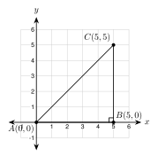
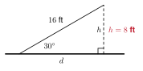

6.1 Special Right Triangles
- Find the sides of a 45°-45°-90° triangle from one side
- Find the sides of a 30°-60°-90° triangle from one side
- Choose the correct special triangle and write exact answers and decimals
- Use special right triangles to solve real problems
Warm-Up
1. c2 = 52 + 122 = 169, so c = 13
2. 48 = 16·3 = 43
3. 5x − 3 = 2x + 12
3x = 15
x = 5
6.1.1The 45°-45°-90° Triangle
- A square cut along its diagonal makes two 45°-45°-90° triangles.
- The two legs are equal. Each acute angle is 45°.
- Rule: hypotenuse = leg × 2.
- To find a leg from the hypotenuse, divide by 2 and rationalize.


Sketch and label:
hypotenuse = 72 ≈ 9.9
112 ≈ 15.6
The legs are 90 ft.
The throw is the hypotenuse.
d = 902 ≈ 127.3 ft
From the hypotenuse: divide by 2, then rationalize.
leg = 82 · 22 = 822 = 42 ≈ 5.7
122 = 1222 = 62 ≈ 8.5

AB is horizontal and BC is vertical, so m∠B = 90°.
AB = 5 and BC = 5. The legs are equal.
AC = 52 + 52 = 50 = 52 ≈ 7.1
a. PQ is horizontal and QR is vertical, so the angle at Q is 90°. PQ = 6 and QR = 6, so the legs are equal.
b. PR = 62
6.1.2The 30°-60°-90° Triangle
- Cut an equilateral triangle in half with its height. Each half is a 30°-60°-90° triangle.
- The short leg is across from 30°. Call it x.
- The hypotenuse is 2x.
- The long leg is across from 60°. It is x3.
- The shortest side is across from the smallest angle. Find the short leg first.

Hypotenuse: 2 · 5 = 10
Long leg: 53 ≈ 8.7
Hypotenuse: 18. Long leg: 93 ≈ 15.6
Short leg: 14 ÷ 2 = 7
Long leg: 73 ≈ 12.1
Short leg: 10. Long leg: 103 ≈ 17.3
x3 = 6, so x = 63 = 633 = 23 ≈ 3.5
Short leg: 23. Hypotenuse 2x = 43 ≈ 6.9
Short leg: 93 = 933 = 33 ≈ 5.2
Hypotenuse: 2 · 33 = 63 ≈ 10.4
6.1.3Choosing the Right Rule
| Angles | Sides |
|---|---|
| 45°, 45°, 90° | s, s, s2 (leg, leg, hypotenuse) |
| 30°, 60°, 90° | x, x3, 2x (short leg, long leg, hypotenuse) |
a. The legs are equal: 3x − 2 = 2x + 2, so x = 4. Each leg is 10. Hypotenuse: 102 ≈ 14.1
b. The hypotenuse is twice the short leg:
3x − 1 = 2(x + 4), so x = 9
Short leg 13. Hypotenuse 26.
Long leg 133 ≈ 22.5
a. 5x − 3 = 2x + 9, so x = 4. Each leg is 17. Hypotenuse 172 ≈ 24.0
b. 3x − 4 = 2(x + 6), so x = 16. Short leg 22. Long leg 223 ≈ 38.1
He put 3 on the hypotenuse. The hypotenuse is twice the short leg: 12. The long leg is 63. Check: 36 + 108 = 144 = 122.
6.1.4Special Triangles in the Real World

The ramp is the hypotenuse. The rise h is the short leg.
h = 16 ÷ 2 = 8 ft
d = 83 ≈ 13.9 ft
Sketch:
182 ≈ 25.5 in.
Short leg 30 ÷ 2 = 15. Height = long leg = 153 ≈ 26.0 ft
1. In a 45°-45°-90° triangle the legs are equal and the hypotenuse is the leg times 2.
2. To find a leg from the hypotenuse, divide by 2.
3. In a 30°-60°-90° triangle the short leg is across from 30°.
4. The hypotenuse is twice the short leg, and the long leg is the short leg times 3.
Practice
45°-45°-90°: find the hypotenuse.
1. The leg is 4. Give the exact hypotenuse. 42
2. The leg is 10. Give the exact hypotenuse. 102
3. The leg is 15. Round the hypotenuse to the nearest tenth. 152 ≈ 21.2
4. The leg is 32. Find the hypotenuse. 32·2 = 6
45°-45°-90°: find the legs.
5. The hypotenuse is 6. Give the exact length of each leg. 32
6. The hypotenuse is 20. Give the exact length of each leg. 102
7. The hypotenuse is 9. Round each leg to the nearest tenth. 922 ≈ 6.4
8. The hypotenuse is 52. Find each leg. 5
30°-60°-90°: the short leg is given. Find the other two sides.
9. Short leg 3. hyp. 6, long leg 33 ≈ 5.2
10. Short leg 8. hyp. 16, long leg 83 ≈ 13.9
30°-60°-90°: the hypotenuse is given. Find the legs.
11. Hypotenuse 16. short 8, long 83 ≈ 13.9
12. Hypotenuse 30. short 15, long 153 ≈ 26.0
13. Hypotenuse 9. short 4.5, long 4.53 ≈ 7.8
30°-60°-90°: the long leg is given. Find the other sides.
14. Long leg 43. short 4, hyp. 8
15. Long leg 12 (nearest tenth). short 43 ≈ 6.9, hyp. 83 ≈ 13.9
16. Long leg 7 (nearest tenth). short 733 ≈ 4.0, hyp. 1433 ≈ 8.1
Find the missing sides.

17. In triangle (a), find x and y exactly. x = 11, y = 113 ≈ 19.1
18. In triangle (b), find x exactly and to the nearest tenth. x = 92 ≈ 12.7
Solve for x. Then find the hypotenuse.
19. A 45°-45°-90° triangle has legs 4x + 1 and 2x + 13. Round the hypotenuse to the nearest tenth.
4x+1 = 2x+13, so x = 6. Legs 25. Hypotenuse 252 ≈ 35.4
20. A 30°-60°-90° triangle has short leg 2x − 1 and hypotenuse x + 13. Find the long leg to the nearest tenth.
x + 13 = 2(2x − 1), so 3x = 15 and x = 5. Short leg 9. Long leg 93 ≈ 15.6
Real problems. Draw and label a triangle first. Round to the nearest tenth.
21. A square tile has sides of 24 inches. How long is its diagonal?
242 ≈ 33.9 in.
22. A roof truss is an equilateral triangle with sides of 20 feet. Find its height h.
103 ≈ 17.3 ft
23. A hexagon nut has sides of 10 millimeters. The distance d across two flat sides is two heights of the equilateral triangles inside it. Find d.
2 · 53 = 103 ≈ 17.3 mm
24. A ramp is 20 feet long and makes a 30° angle with the ground. Find the rise and the distance it reaches along the ground.
rise 10 ft; ground 103 ≈ 17.3 ft
25. A Little League diamond is a square with 60-foot sides. How far is it from home plate to second base?
602 ≈ 84.9 ft
Find the mistake.
26. Amira says: "The hypotenuse of a 45°-45°-90° triangle is 10. So each leg is 102." Find her mistake and fix it.
She multiplied by 2. A leg is shorter than the hypotenuse, so divide: 102 = 52 ≈ 7.1.
Show it with coordinates.
27. Points P(−2, −1), Q(6, −1), and R(6, 7) form a triangle. Show that it is a 45°-45°-90° triangle. Then find PR exactly.
PQ is horizontal and QR is vertical, so the angle at Q is 90°. PQ = 8 and QR = 8. The legs are equal, so it is 45°-45°-90°. PR = 82 ≈ 11.3.
Test Practice
A. 15.0 m
B. 21.2 m ← correct
C. 30.0 m
D. 42.4 m
A. 6.0 in.
B. 10.4 in. ← correct
C. 13.9 in.
D. 17.0 in.
Challenge
Side: 142 = 72. Area: (72)2 = 98 square units.
The long leg is 9 = x3, so x = 33. The side is 2x = 63 ≈ 10.4.